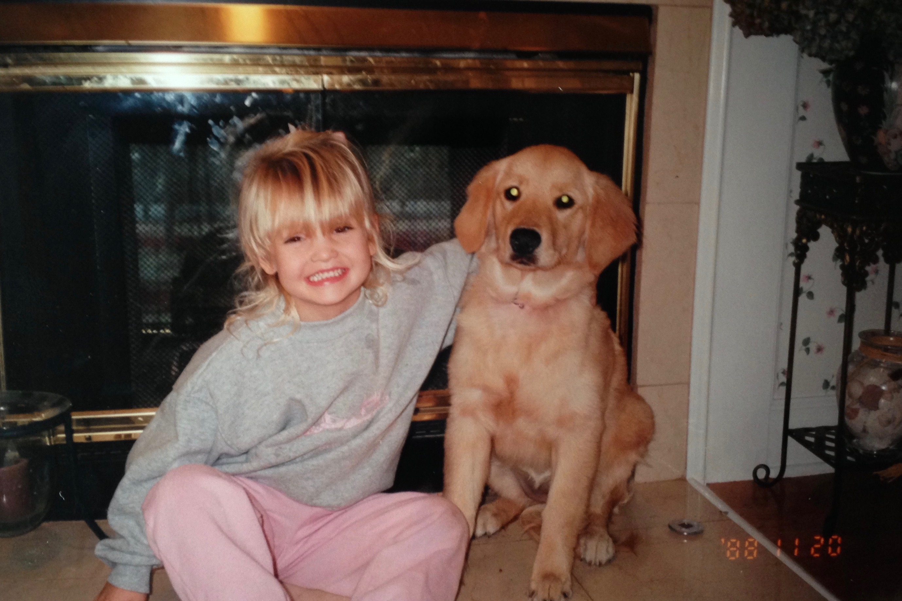

Golden Retrievers
The Golden Retriever is without a doubt the best dog breed in the world. I know this because I have had over ten golden retrievers in my life. My first dogs name was Belle; we got her when I was around six years old. When I was eight years old we decided to breed Belle, and thus she had 9 puppies. We decided to keep one of the puppies and name him, Baloo (like the bear from The Jungle Book). Being 8 years old with 9 golden retriever puppies was the best time of my life. That is also one of the main reasons that I am so madly in love with the breed.
Bosko
Two years ago belle passed away, and Baloo passed away this past November. It was so hard not having a dog, and we missed our Goldens so much. So on January 1st 2017 we bought a golden retriever puppy. It was kind of an impulse decision but also the best decision we ever made. We named our new lil puppy boy Bosko. He is a whole lot different than Belle and Baloo. He has such a huge personality and he doesn't really listen to you... Ever. He doesn't come when you call his name; he comes when he wants to. But, nonetheless he is an amazing golden retriever.
Best Breed in the World!
Golden Retrievers are more loyal, loving, and obviously the best looking breed in the game. I wouldn't trade my life and childhood of growing up with those loving dogs for anything. So if you are ever thinking of buying a dog, look no further than the kennel with the fluffy golden retrievers!
| Colors | Temperament |
|---|---|
| Golden | Trustworthy |
| Cream | Reliable |
| Dark Golden | Kind |
| Light Golden | Friendly |